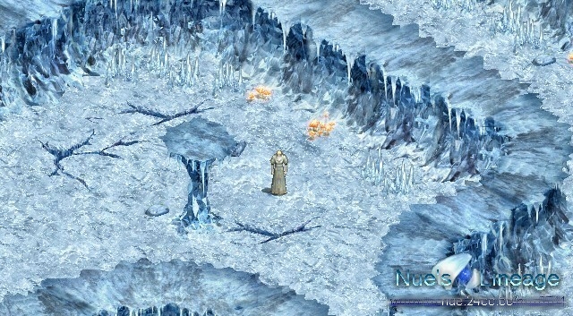

2002年5月27日
來源：Nue's Lineage
Nue在其BBS上釋出了有關冰之洞窟的地型抓圖！希望不會有太多圖像效果而像水底或火谷一樣的Lag吧 ^^
水晶洞窟(冰之洞窟) 1F (那樓梯是往地面的)
水晶洞窟(冰之洞窟) 1F (那樓梯是往2F的)

水晶洞窟(冰之洞窟) 2F
水晶洞窟(冰之洞窟) 3F 冰之宮殿中央
Copyright(C)1998-2003 Gabriel Leung. All Rights Reserved.